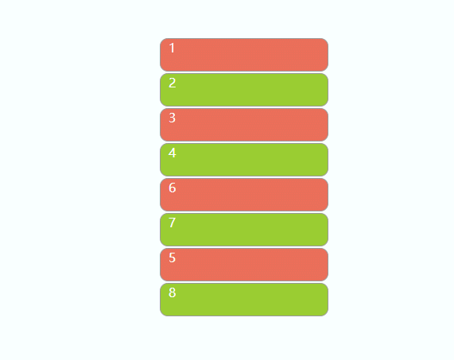

之前写项目时实现过自定义拖拽幻灯片里面的图片(代码片段)，最近在学单元测试，里面的一个例子是todolist，轻轻松松完成后想实现例子里面拖拽效果，于是有了这个笔记(这个是我自己实现的todolist，样式全是参考的例子里面的)。

效果图
1、 jquery版本的
html
1
2
3
4
5
6
7
8
9
10
| <ul id="container">
<li class="ele" draggable="true">1</li>
<li class="ele" draggable="true">2</li>
<li class="ele" draggable="true">3</li>
<li class="ele" draggable="true">4</li>
<li class="ele" draggable="true">5</li>
<li class="ele" draggable="true">6</li>
<li class="ele" draggable="true">7</li>
<li class="ele" draggable="true">8</li>
</ul>
|
css
1
2
3
4
5
6
7
8
9
10
11
12
13
14
15
16
17
18
19
20
21
22
| ul {
list-style: none;
margin: 200px;
font-size: 0;
}
.ele {
font-size: 16px;
width: 200px;
height: 40px;
border: 1px solid #999;
background: #EA6E59;
margin: 2px 0;
border-radius: 10px;
padding-left: 10px;
color: white;
cursor: move;
}
.ele:nth-child(even) {
background: yellowgreen;
}
|
拖拽(drag)主要用到ondragstart、ondragover这两个事件，可以了解一下其他drag相关的事件
思路：
- 使用事件委托，将
li的事件委托给ul(为什么使用事件委托?)
- 在
ondragstart时用一个变量来存储当前拖拽的dom元素
ondragover时比对dragover的元素是不是li且与是不是拖拽的元素自身- ps:别忘了给需要拖拽的元素加
draggable="true"哦
1
2
3
4
5
6
7
8
9
10
11
12
13
14
15
16
17
18
19
20
| var node = document.querySelector("#container");
var draging = null;
node.ondragstart = function (event) {
event.dataTransfer.setData("te", event.target.innerText);
draging = event.target;
}
node.ondragover = function (event) {
event.preventDefault();
var target = event.target;
if (target.nodeName === "LI" && target !== draging) {
if (_index(draging) < _index(target)) {
target.parentNode.insertBefore(draging, target.nextSibling);
} else {
target.parentNode.insertBefore(draging, target);
}
}
}
|
2、 vue版本的
这边还有个小知识点，如何实现自定义指令。
逻辑基本与jquery版本的相同，这边主要记录一下如何自定义指令。
2.1 实现自定义指令的逻辑
在src路径下创建directive文件夹，进入该文件夹，创建文件drag.js,下面是drag.js内的代码
1
2
3
4
5
6
7
8
9
10
11
12
13
14
15
16
17
18
19
20
21
22
23
24
25
26
27
28
29
30
31
32
33
34
35
36
37
38
39
40
41
| import Vue from 'vue'
const _index = (el) => {
let index = 0
if (!el || !el.parentNode) {
return -1
}
while (el && (el = el.previousElementSibling)) {
index++
}
return index
}
let draging = null
const drag = Vue.directive('drag', {
inserted: function (el) {
el.ondragstart = e => {
draging = e.target
}
el.ondragover = e => {
e.preventDefault()
const target = e.target.parentNode
if (target.nodeName === 'LI' && target !== draging) {
if (_index(draging) < _index(target)) {
target.parentNode.insertBefore(draging, target.nextSibling)
} else {
target.parentNode.insertBefore(draging, target)
}
}
}
}
})
export default drag
|
2.2 使用
在src下的main.js文件内添加如下代码：
1
| import drag from '@/directive/drag'
|
在组件或者页面内无需引用即可以直接使用
1
2
3
4
5
6
| <ul>
<li v-for="(item,index) in list" :key="item.value" draggable="true" v-drag>
<input type="checkbox" v-model="item.checked">
<p>{{ item.value }}</p>
</li>
</ul>
|
参考资料：
HTML5 drag & drop 拖拽与拖放简介
js drag拖动排序